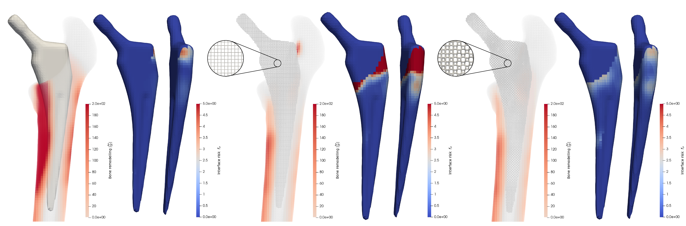

Multi-objective design optimization of 3D micro-architected implants
Computer Methods in Applied Mechanics and Engineering, 2022
| Eric Garner | Jun Wu | Amir A. Zadpoor |
| TU Delft | TU Delft | TU Delft |

The design and performance of a) solid, b) uniform lattice, c) optimized heterogeneous lattice titanium implants in terms of local bone remodelling and the Hoffman interface stress risk indices.
Abstract
Recent advances in 3D printable micro-architected materials offer unprecedented possibilities for the development of highly tailored orthopaedic implants. These devices, which are typically made from fully solid materials, significantly alter load transmission to the surrounding bone tissue, potentially leading to interface instability and bone resorption. In this work, we present computational methods to synthesize three dimensional (3D), patient-specific, implants with heterogeneous micro-architecture. Our method simultaneously minimizes the risks of load-induced interface fracture and peri-prosthetic bone remodelling, while taking into account functional and manufacturing constraints. We first develop a novel parametric micro-architecture with desirable functional attributes and a wide range of effective mechanical properties, including both positive and negative Poisson's ratios. We then present formulations which optimize the spatial configuration of micro-architecture parameters in order to simultaneously minimize the risk of load-induced interface fracture and post-operative bone remodelling. To that end, a novel bone remodelling objective is devised, taking into account both bone apposition and resorption, predicted via a model based on strain-energy density. The interface fracture objective is defined as the maximum value of the multi-axial Hoffman failure criterion along the interface. The procedure is applied to the design of 3D titanium hip implants with prescribed conventional geometries and compared, in silico, to both a conventional solid implant and a homogeneous low-stiffness lattice design. The optimized implant results in a performance improvement of 64.0% in terms of bone remodelling, and 13.2% in terms of interface fracture risk, compared to a conventional solid implant design.Keywords
Topology optimization; Additive manufacturing; Bone remodelling; Stress shielding; Interface fracture; Micro-architecture; Heterogeneous latticeAcknowledgements
This work is part of the research program: ``Metallic clay: shape-matching orthopaedic implants'' with project number 16582, which is financed by the Dutch Research Council (NWO).
Download
 |
Paper 18.4 MB |
Bibtex
@article{Garner2022CMAME,
title={Multi-objective design optimization of 3D micro-architected implants},
author={Eric Garner and Jun Wu and Amir A. Zadpoor},
journal={Computer Methods in Applied Mechanics and Engineering},
volume={396},
pages={115102},
year={2022},
doi={https://doi.org/10.1016/j.cma.2022.115102},
publisher={Elsevier}
}